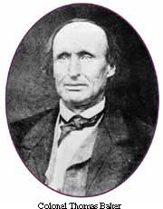
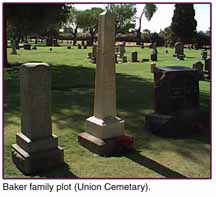

|
How Bakersfield Got Its Name By Chris Brewer Colonel Thomas Baker, senator, assemblyman, Colonel of the Iowa Territorial Militia, Receiver for the United States Land Office, developer, lawyer, surveyor, statesman, and entrepreneur. These are some of the titles which Baker could lay claim to during his lifetime. He was responsible for the settlement of many communities in both Iowa and California. One such community bears his name, Bakersfield, California. Baker was described as being a man of rather slender build, about five feet ten or eleven inches in height, and having a light complexion. He is said to have been a fair scholar, and to have had good business qualities. He was born and raised in Ohio, growing up there, later moving to the Territory of Wisconsin, which soon became Iowa Territory. First relocating, to Slaughter County, in 1838, Baker was appointed as Clerk of the Court of the first District Court. Later that year, he was also appointed as the Clerk of the Board of County Commissioners. A self-taught attorney, he was also appointed as the first United States District Attorney for Washington County, holding that office until Iowa was admitted to the Union as a state in 1846. In 1841, Baker was nominated as a Colonel in the Iowa Territory Militia. Baker served on the Fourth and Sixth Territorial Legislative Assemblies. Continuing to be involved in State government, Baker relocated to Polk County, and later, Des Moines. Once Iowa gained statehood, Baker was elected as a member of the first State Legislature as a repre-sentative of a large district made up of Marion, Polk, Jasper and Dallas counties. During his tenure in the Iowa legislature, Baker drafted many laws in the state's first code. He was elected President of the State Senate, thus becoming ex-officio, Iowa's first Lieutenant Governor. Political turmoil was the determining factor to send Baker packing for California in 1850, arriving in the fall, landing first, according to family lore, in Benecia. Baker soon moved inland to Stockton, a port on the San Joaquin River. By 1852, he proceeded southward to the delta land in the northern area of the newly formed Tulare County. This area was rich in its forests of Oaks, Sycamores and other indigenous trees. Baker and his family were among the first four families to settle in the area which was later to become the city of Visalia in Tulare County. Old timers and family alike credit Baker with laying out the town for Nathaniel Vice, the credited founder of the town. Baker's second wife died in the mid 1850's, and he, not being much of a bachelor remarried at age 47. His new bride, Ellen Whalen, was a young woman of twenty. In 1855, Baker was elected to the State Assembly, representing Fresno and Tulare counties, serving in 1856 and 57. Baker was also appointed Receiver for the United States Land Office by President James Buchanan, serving during Buchanan's term. In 1861, Baker was elected to represent Tulare and Fresno Counties in the State Senate, serving in the sessions of 1861-62. Baker and his son, James, were taken to the Kern Island area in 1857 by Captain Elisha Stephens, who led the first wagon trains over the Sierra Nevada. In 1856, Baker was involved in a legislative act which created an opportunity to reclaim swamp and overflow lands in the southern valley. This act, eventually known as the Montgomery Act, offered the right to reclaim all the swamp and overflow lands belonging to the state, located between the San Joaquin River at Kings River Slough and Tulare Lake. For this, the contractors would be deeded a percentage of the recovered land. This act would later become the basis of Baker's activities in the southern San Joaquin Valley. Though not the original contractor, Baker and a partner purchased the rights to the contract and Baker moved onto Kern Island, purchasing Christian Bohna's property in 1862. Though normally a swampy area, in 1864, the southern San Joaquin Valley was suffering from the worst drought since the state was settled by Americans. Baker was able to construct a dam across the outlet of Buena Vista Lake to control the flow of water. By the summer of 1865, due to the lack of rain, and the construction of several irrigation ditches which had diverted much water from Kern, Buena Vista and Tulare Lakes, the area dried up. After inspection of the drainage by the state, Baker was issued a patent for 87,120 acres of land in Kern, Tulare, and Fresno counties. This was his part of the reclaimed land under the agreement. From a portion of the land he gained in Kern County, which happened to surrounded his homestead, Baker laid out a community which eventually became the City of Bakersfield. Now that the Bakers were settled in their new Kern Island home, other people became attracted to the area, and settlers started to trickle in. A Stage line ran between Los Angeles and Sacramento. Along its route, freight loads of provisions began making their way regularly to Kern Island. Colonel Baker's island became a regular stopping-off place for all travelers journeying through the San Joaquin Valley. With the help of Indians, he cleared a place for a home garden, in which he raised corn, beans and potatoes. His son, Thomas A Baker, often mentioned the fact that "some of the cornstalks grew to be 22 feet high, and an ear of corn shelled an even quart." By 1868 the valley was suffering from the second year of drought. Until that occurrence, wild grass grew in abundance between the town and the nearby hills. It was so plentiful that the residents took it up in bundles, hauling it off to their ranches, where they used it as feed for the livestock. Each year, Colonel Baker stashed away 50 tons of this grass, which he used as hay not only for his own stock but for his guests' animals as well. Baker's Field was right on the main road between San Francisco and Los Angeles. Travelers en route were able to take advantage of the Colonel's hospitality, by stopping over and setting their stock out to pasture in what they naturally enough dubbed "Colonel Baker's Field." It was truly the only spot along the entire route, save for Visalia where they could find food for themselves and their animals. As was seen in Tom Baker's comments, Baker and his family kept an open house policy, in genuine Southern style and, it was not long before they had gained a well-deserved reputation for feeding and lodging travelers and their stock, whether they came in the daytime or at night. The Colonel and Mrs. Baker warmly welcomed each and every traveler. He would not only give them meals and a room for the night, but he also fed the animals. He never asked or accepted money for any of these services and courtesies, but considered himself well repaid by the pleasure his open-handed hospitality furnished him. In November, 1872, an epidemic of typhoid fever ravaged those living in and around Baker's Field, and among the first stricken was the 62 year old Colonel Baker. So great was the grief of the stunned community he had founded, that until after the funeral the following Tuesday all business and social activity was halted. During his life, Baker felt compelled to make life better for the ordinary citizen. He was a staunch states' rights advocate, enough to be arrested for treason after his comments on the issue during the beginning of the War Between the States. Baker had a deep seated need to bring change to the ordinary way of life on the frontier. Because of this, he was able to turn a malarial swamp into the bustling community of Bakersfield, California. About the Author: Chris Brewer is the great, great grandson of Colonel Thomas Baker. His grandmother was Diamond Baker. Mr. Brewer was raised in Bakersfield and now resides in Exeter, Ca. where he is a commercial orange grower and historian. The above article is excerpted from Mr. Brewer's upcoming biography on Colonel Baker and the Baker Family due out in 1998. To contact Chris Brewer send email to: vintage@lightspeed.net |
Copyright 1997,The Bakersfield Californian Email the Webmaster:owilde@kern.com |